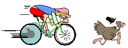

|
Phoenix Turkey Day Ride 2024 - 41th Anniversary |

|
| Who? | You, me, our friends, and their friends. Everyone welcome! |
| What? | The 41th time a group of crazy riders gather, too cold and too early, to ride up South Mountain to keep in shape and carry a rock up to Dobbins point in an effort to slow down the mountain's erosion. See "History and Tradition" below to learn about these crazy traditions. Average to brisk pace to the mountain. After loading up with rocks at the old gate (bathrooms) there's an unofficial race to Dobbins. Please come self contained as there is no support. About 40 miles round trip. |
| When? | Thursday, November 28th, leaving at 6:30am (Yes, could be cold) |
| Why? | Because we're all crazy? Earn the right to consume mass calories? It's fun? |
| Where? | Northeast corner of Camelback and Central (A.J.'s) |
|
The TurkeyDayRide officially started in 1980. There were 5 riders and the ride started at 5:00am on Thanksgiving morning. The idea was to get a good ride in, get to Dobbins point early enough to watch the sunrise and get home in time to work on Thanksgiving day activities of cleaning and cooking food for the family.
To the best of my knowledge the five riders were Joel Nelson, Scott Foster, Greg Sumrall, John Brush and Jim Norman. They will correct me if I am wrong except John Brush who is no longer with us. Peace out John!
There were two years where the ride did not take place and one due to Covid which is why it seems we are three years off.| This is an unsponsored, unsanctioned, unorganized event that just happens every year. Various individuals have notoriety for this events historical start. |